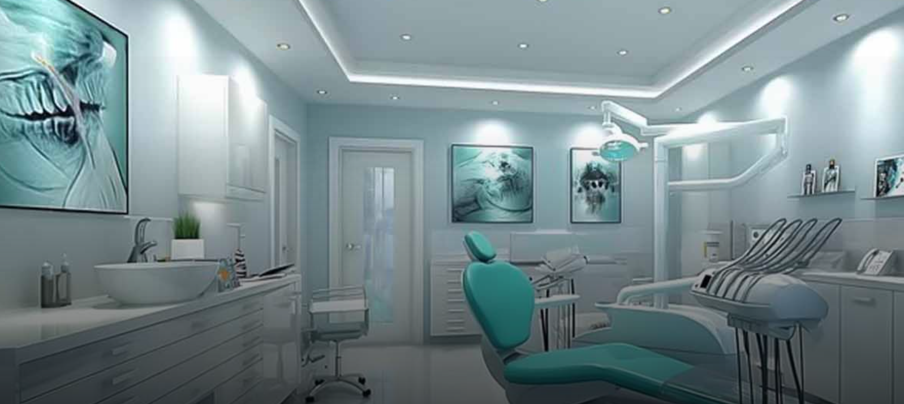
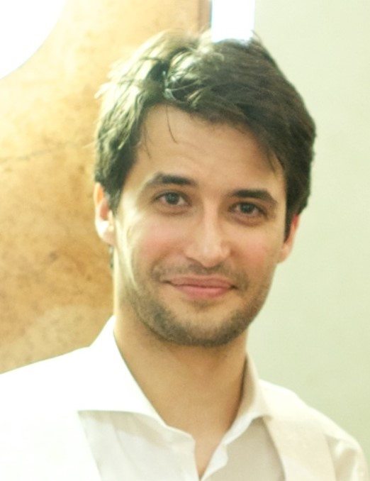
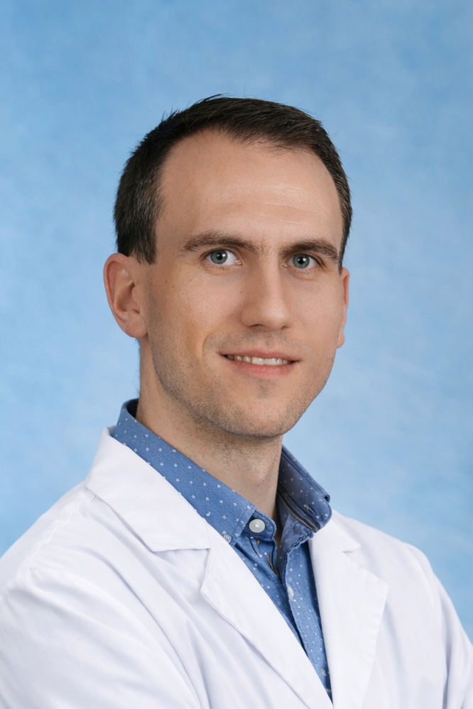

Gyermek- és felnőttkori fogszabályozás • Állcsont-ortopédia • Dento-alveoláris sebészet
Buda szívében • Széll Kálmán tér közelében
Köszöntjük a Városmajori Fogszabályozás honlapján!
Fogszabályozó rendelőnk Buda központi részén, a Déli pályaudvar és a Széll Kálmán tér szomszédságában helyezkedik el, a 1122 Budapest, Városmajor u. 47/b szám alatt.
Rendelőnkben gyermek- és felnőttkori fogszabályozással, továbbá egyéb állcsontortopédiai eltérésekkel foglalkozunk. Némely eltérés kezelésében szükséges lehet dento-alveoláris sebészeti beavatkozás is, mely rendelőnkben szintén elérhető.
Szakorvosaink a gyermekek nyelvén jól értő, nyitott, kedves és türelmes orvosok...
Rendelőnkben újszülött-kortól várjuk a kis betegeket...
Bejelentkezés a Kapcsolat menüpontban található elérhetőségeken!

dr. Illés Emil vagyok, a Heim Pál Országos Gyermekgyógyászati Intézet Állcsontortopédiai és Fogszabályozási Osztályának gyermek-dento-alveoláris sebésze és a Városmajori Fogszabályozási Rendelő Szakmai Vezetője.
Munkatársaimmal együttműködésben évente legalább ötven olyan állcsontortopédiai esettel találkozunk, ahol az nem zajlik le a fog áttörése az elvárt életkorban. A szülők azzal a panasszal jelentkeznek klinikán, hogy a gyermeknek még mindig nem nőtt ki a maradó foga. Természetesen, mivel minden gyermek testi fejlődése egyéni, az áttörés elmaradásának észlelésekor elsősorban türelemre intjük a szülőket, mindazonáltal megvizsgáljuk, van-e a betegünk csontozatában, anatómiai és genetikai adottságaiban olyan ok, mely valószínűsítheti a fogáttörés lezajlásának teljes elmaradását.
Szájsebészként az a feladatom ezekben az esetekben, hogy az áttörésben visszamaradt fogakat műtéti úton felszabadítsam, hogy fogszabályozó szakorvosaink a fogszabályozási terv részeként azokat végleges helyükre pozicionálják. PHD kutatásomban azt vizsgálom, hogy retineált és impaktált fogak esetében mi lenne a legideálisabb időpont a fog műtéti feltárása szempontjából.
A jelenlegi statisztika azt mutatja, hogy a népesség 0,8-3,6%-ánál diagnosztizálhatóak fogáttörési rendellenességek, fontosnak tartom foglalkozni azzal, hogyan tudjuk a legeredményesebben megoldani az áttörésben visszamaradt fogak megfelelő helyre történő pozicionálását úgy, hogy a csontosodás, a gyökércsatornák egészsége és a ginigva állapota is kielégítő legyen hosszú távon is. Egy 2009-es statisztika szerint az áttörésben visszamaradt fogak leggyakrabban az alsó és felső harmadik nagyőrlőfogak.
Bár sok szempontból nagyon hasonlóak az impaktált és a retineált fogak áttörésének akadályai, retineált fogként azt a fogat említjük, amely már kifejlődött, azonban nem képes az állcsontból előtörni, mindemellett nincs látható, fizikai akadálya. Impaktált fog esetében viszont egyértelműen meghatározható a fog visszamaradásának oka (helyhiány, gyulladás, számfeletti fog, stb). Impaktáltnak azokat a fogakat tekintjük, amelyek az állcsontban maradnak az elvárt áttörési életkort követő két éven túl is.
Keressen minket bizalommal állcsontortopédiai konzultáció céljából a Kapcsolat menüpontban található elérhetőségeken keresztül!

Gyermek-dento-alveoláris sebész • Szakmai vezető
Fogorvosi diplomámat a Semmelweis Egyetem Fogorvostudományi Karán szereztem 2008-ban. Dento-alveoláris sebész szakvizsgámat 2011-ben szereztem a Veszprém Megyei Csolnoky Ferenc Kórház Arc-, Állcsont-, Szájsebészeti Osztályán.
2008 óta foglalkozom betegekkel fogorvosként, 2011 óta végzek az állcsontot érintő beavatkozásokat - implantáció, impaktált fogak eltávolítása, bölcsességfog-eltávolítás feltárásban, góckutatás – Veszprémben, Pápán, Budakeszin, Budapesten és külföldön.
2023 májusától ambuláns gyermek-szájsebészeti ellátást is végzek a Heim Pál Országos Gyermekgyógyászati Intézet Állcsont-orthopédiai és Fogszabályozási Osztályán: radixok, impaktált fogak és számfeletti fogak eltávolítása, az arcüreg zárása, a retineált fogak műtéti felszabadítása, frenulektómia.
Nem kooperáló gyermekeknél altatásos beavatkozásokat végzünk a kórházban.
Háromgyermekes apaként fontosnak tartom, hogy gyermekkorban elkezdjük a fogászathoz való pozitív hozzáállást és, hogy az esetleges beavatkozások kiszámíthatóan történjenek, hogy erősödjön a gyermekek bizalma az őket ellátó orvosokban. Állcsontortopédiai-korrekció tervezése esetén különösen fontos, hogy a gyermeket felkészítsük, mi vár rá, és tőle milyen erőfeszítéseket várunk a kívánt eredményhez. Kollégáimmal holisztikus szemléletben dolgozunk, hisszük, hogy minden gyermek megérdemli a személyiségéhez legjobban passzoló kezelési tervet, így lesz az állcsont-korrekció hosszú távon is eredményes és traumáktól mentes.

Fogszabályozás szakorvos • Általános orvos
Fogorvosi diplomámat a Semmelweis Egyetem Fogorvostudományi Karán szereztem, ahol átfogó elméleti és gyakorlati képzésben részesültem. A képzés során kifejezett figyelem összpontosult a bizonyítékokon alapuló fogászati eljárások elsajátítására. Posztgraduális szakképzést fogszabályozás területén végeztem a Heim Pál Országos Gyermekgyógyászati Intézetben, ahol kiemelkedő szakmai tapasztalatot szereztem a gyermekek ellátásában. Rendszeresen részt veszek továbbképzéseken, hogy naprakész tudással szolgálhassam pácienseimet.
Munkám során rendkívül fontosnak tartom a páciensekkel való együttműködést és a közös, bizalmon alapuló munkát. Hiszem, hogy a sikeres kezelés kulcsa az orvos és a páciens aktív partnersége, különösen a hosszabb fogszabályozó kezelések esetében. Nagy hangsúlyt fektetek a részletes tájékoztatásra és arra, hogy pácienseim értsék és elfogadják a kezelési lépéseket. Célom, hogy a közös munka eredményeként tartós, egészséges és esztétikus mosolyt érjünk el.
Nagyon fontosnak tartom a fogazati és állcsonti eltérések korai felismerését, mert időben megkezdett kezeléssel sok esetben megelőzhetők a későbbi, összetettebb problémák. A fiatal páciensek ellátása során nagy hangsúlyt fektetek a bizalom kialakítására és a kíméletes, életkorhoz igazított megoldásokra. Célom, hogy a gyermekek számára egészséges harapást és harmonikus mosolyt biztosítsak, amely felnőttkorukban is tartós marad.